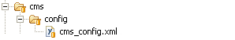

The larder guide tells your cook, where to find the content files it should load. For an example have a look at my former xml-configuration from my old homepage as a sample. In this XML-file you have to set four parts (all nested in tag <cms-config>):
- Domain/home site
- Content root
- Menu items
- Content
Domain/home-site
Regarding tag <domain>. Following nested attributes exist:
- <url>: URL of your homepage
- <home>: entry site of your homepage or the site you get redirected to when you request a wrong link. home link gets defined in <contents> part
Content root
Regarding tag <content-root>. Following nested attribute exists:
- <dest>: destination of you content root path. To make it possible to abbreviate the paths (you’re setting in the content part) you have to tell where the content root path resides. This way you don’t need to prepend this directory to the path information. Usually you should choose the path ‘/content’. Watch out that your path does not end with a slash ‘/’!!
Menu items
Regarding tag <menu> and its nested tags <menu-item>. Following attribute exists:
- <link>:In nested tags you tell which contents should be included as links on the site’s menu module. You just need to put the unique link identifier,
whose path is defined in the content configuring part.
The order of tag <menu-item> defines the order of displayed menu items on your site.
Content
Regarding tag <contents> and its nested tags <item>. Following attributes exist:
- <name>: value is attached as content name to the link. This name gets displayed in the menu, title, pathway and parent navigation site modules.
- <link>: identifier (must be unique!) of a content site. Further more this value must map the filename of your content file.
- <category>: category of your content. This information is visualized in title, pathway and parent navigation. <category> and <link> values put together define the path of your content file above content root (see <content-root> tag)
- <lang>: the language of your content. If set english (value “en”) the parent navigation site module is localized in english. Remember that this language setting is optional. Default value is german (value “de”).